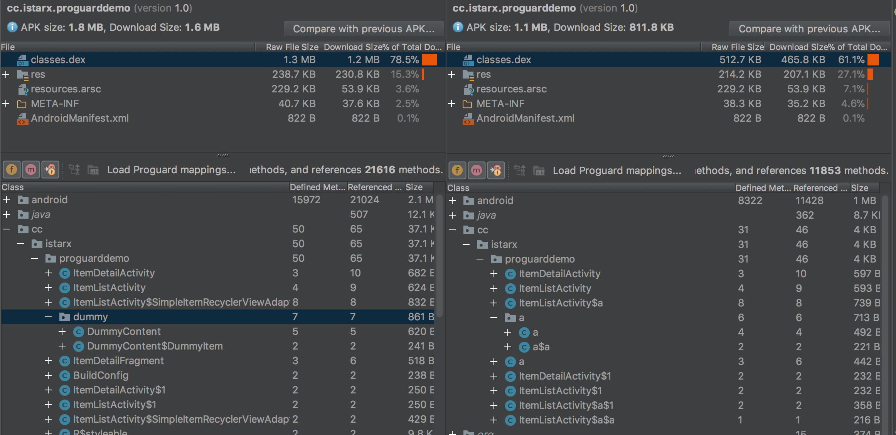

最近公司对项目使用 Proguard 工具做代码优化及混淆，正好称这个机会学习了下一代码混淆方面的知识，顺便做个笔记，分享一下。
- Proguard 简介
- 利用 Proguard 处理源代码
- 配置选项
- filter
- Class Specifications
- @filename/-include filename
- -basedirectory
- -injars/-outjars/-libraryjars
- -skipnonpubliclibraryclasses/-dontskipnonpubliclibraryclasses/-dontskipnonpubliclibraryclassmembers
- -printconfiguration/-printseeds
- keep 选项
- Shrink 过程选项
- Optimization 过程选项
- Obfuscation 过程选项
- 预检过程选项
- General Options
Proguard 简介
Proguard 是集压缩、优化、混淆、预检等功能于一身的工具，主要是对代码进行压缩、优化、混淆，以达到优化运行，防止反编译的目的。它可以删除无用的变量、方法、类以及资源，删除无用的log 以及注释，最大程度的减少字节码文件的大小。在 Android 中用来减小 apk 大小、提升运行速度以及增加反编译难度，官方的描述是最大能减少90%以及运行速度加快20%。
- 压缩阶段：在软件开发的过程中，因为需求变更或者修改 bug，总会或多或少保留一些没来得及删除的无用代码，或者引用的第三方包中有许多无用的代码。压缩阶段正是对不在规则文件内保留的，并代码内没有使用的类、方法、变量等进行清除；
- 优化阶段：该阶段会分析并优化字节码文件，可以在配置文件中配置优化算法以及优化次数；
- 混淆阶段：改阶段会将易读的类名、方法名、变量名等替换为简短并无意义的单个字母或者字母组合，在该步骤中还会重写代码中的部分逻辑，打乱代码格式，从而带到混淆的目的；
- 预检阶段：在类中添加预校验信息，预校验信息在 java 6版本以上或者Java Micro Edition版本上是必须的；
以上四个步骤都可以通过配置进行取舍，可以选择其中的一个或者多个阶段对代码进行处理。对于指定的 Library Jar，在处理前后是保持不变的。
利用 Proguard 处理源代码
Proguard 工具又多种使用方式，也可以利用到很多类型的工程 (java、Android等)。在使用 Proguard 工具之前需要先到官网进行下载(最新版本6.0.2)，下载的压缩包解压之后目录如下：
. |
如果已经配置好 Android 环境并下载了 Android Sdk，则<ANDROID_HOME>/tools/proguard目录即为 Proguard 工具，目录结构稍微有点区别。
可以利用 bin目录下的脚本、利用 java 命令或者利用其它方式执行 Proguard 工具。
利用bin目录下的脚本启动
cd examples/standalone |
其中@proguard.pro是指规则文件或者配置文件。
利用 java 命令启动
利用命令行对代码进行处理，只需要简单的输入以下命令即可：
cd proguard |
其中 -injars 参数可以指定至少一个输入，指定被处理的源文件，options可选择性的添加例如-verbose、-libraryjars等，后面会说到。同时还可以利用-outjars指定输出包。
另外在上述命令执行的时候会读取一个默认的规则文件，当然也可以知道特定的规则文件：
java -jar proguard.jar -injars <file_name> @config.pro <options> |
在 proguard/example/standalone文件夹下有常用的规则文件。在规则文件中可以包含所有的options选项，也可以在其中规定哪些类、方法、变量等需要保留原始状态。
利用 Proguard GUI 进行代码处理
Proguard GUI 的启动也有两种方法，通过 bin 目录下的脚本启动或者通过 java 命令启动：
./bin/proguardgui.sh # widows 可以直接双击 proguardgui.bat |
其中 [-nosplash]选项可以关闭 GUI 开启动画。Proguard GUI 界面如下：
ProGuard- 首界面，可以加载规则(配置)文件；Input/Output- 输入/输出界面，包括 Program 输入、Library 输入文件以及输出位置，输入可以是jar、aar、文件夹等；Shrinking- 压缩选项设置界面，可以打印 usage ，可以保留例如枚举 enum、Servlet 等 ，其中有许多 Android 特有的选项，例如 Activity、Layout 以及 Library 等，也可以自定义添加类以及类成员；Obfuscation- 混淆选项设置界面，可以选择打印map文件以方便 log 分析，也可以通过-applymapping选项从已有的 map 文件进行混淆，也可以添加要保留的类、方法等；Optimization- 优化选项设置界面，可以选择移除的方法调用，例如 log、System、Math 等类的方法；Information- 定义一些获取其它信息的选项，例如-verbose、-ignorewarnings等；Process- 查看并保存配置文件；ReTrace- 反混淆，可以利用 map 文件把混淆之后的错误栈反混淆；
Android 开启 Proguard
Android Studio 在心间工程的时候默认会在app目录下新建一个proguard-rules.pro文件，该文件为默认的配置文件，在 build.gradle 文件中已经指定了该配置文件。
Gradle 配置
Gradle 中有两个属性minifyEnabled和shrinkResources专门用来控制混淆及压缩，还有一个zipAlignEnabled属性控制 ZipAlign 优化。Android 中开启 Proguard 只需在build.gradle文件中的android.buildTypes.release闭包下把这两个属性值置为true，并且指定 proguard 规则文件即可：
android { |
①处的proguardFiles属性可以指定文件名为proguard-rules.pro的规则文件，文件名可以更换为其它，该文件在app目录下：
该规则文件中默认没有添加任何有效规则。在 gradle 文件中开启 ProGuard 时，会默认添加 proguard-defaults.txt、proguard-android.txt、proguard-android-optimize.txt三个文件，这三个文件在${sdk.home}\tools\proguard\目录和Gradle插件中都有，区别在于在 Gradle 插件 2.2 版本之后，Proguard 会默认添加 Gradle插件中集成的文件，而不使用 SDK 目录下的配置文件。
proguard-android.txt、proguard-android-optimize.txt两个文件的区别在于后者开启了优化选项，即去除了proguard-android.txt文件中的-dontoptimize配置，并指定优化算法以及添加优化次数-optimizationpasses，默认为5。
混淆结果
对统一个应用代码，不做任何改动的情况下，不使用 Proguard 和使用 Proguard 生成的 APK 对比如下：

可以看到 APK 大小减少了700KB左右，很多多余的类、资源被删除，未在配置规则文件内的类以及方法被混淆为无意义的字母，如a或者a$a等。
配置选项
在压缩、优化阶段，Proguard 会根据规则文件(也就是proguard-rules.pro文件)觉得哪些类、方法、变量等需要保留，哪些需要优化或者混淆。Proguard 工具提供了常用的一些模版，在examples/目录下，除了工具自带的一些意外，我们还可以针对不同的项目编写不同的配置文件。
filter
在配置文件中的选项中，有些是支持 filter的，和正则表达式有点类似，主要有以下一些：
| 字符或选项 | 含义 |
|---|---|
? |
匹配任意一个字符 |
* |
匹配任意个人一多个字符，主要用来匹配类名、方法名或者成员变量，匹配类名的时候不包含包名符号. |
** |
匹配任意多个字符，包含包名分隔符. |
*** |
用来匹配所有的类型，包括原始数据类型还是其它，也可以匹配数组 |
% |
匹配任意的原始数据类型，但是不能匹配到 void |
... |
匹配任意多个参数 |
<init> |
匹配构造函数，可以用修饰符修饰，也可用参数指定特定的构造函数 |
<methods> |
匹配所有的方法，可以用修饰符修饰 |
fields |
匹配所有的成员变量 |
例如：
-keep public class cc.istarx.Test? # 匹配类名以 test 开头，并且 test 后面只有一个字符的类 |
Class Specifications
在规则文件中，一个 class 可以通过注释、修饰符等进行限定，这些选项都是可选的，可以在适当的时候借助 filter 进行限定，可以写成如下形式：
[@annotationtype] [[!]public|final|abstract|@ ...] [!]interface|class|enum classname [extends|implements [@annotationtype] classname] |
@filename/-include filename
这两个配置选项是同一个意思，都是从 filename 文件中读取配置选项。
-basedirectory
后面可以跟一个文件夹位置，定义一个基础的文件位置，如果定义了该属性，则该配置文件中的地址都是相对于该文件夹来进行相对定位的。
-basedirectory ~/app/ |
-injars/-outjars/-libraryjars
指定输入、输出、Library 文件位置，可以用多行指定不同的输入/输出文件，如果定义-basedirectory选项，则可以写相对地址。输入输出的文件类型可以是 jars、aars、wars、ears、zips、apks 或者文件夹。通过 injars 指定的文件，经过压缩、优化、混淆，输出到 outjars 指定的文件中。
三个配置可以同时出现，可以指定多个文件，但是不能出现指定的文件相同，同时这三个配置选项还支持 filter。
-injars libs/class1.jar(cc/istarx/**.class) |
-skipnonpubliclibraryclasses/-dontskipnonpubliclibraryclasses/-dontskipnonpubliclibraryclassmembers
在读取 library 文件时，是否跳过非公共的类或者类成员，当 skip 时可以提高 proguard 处理的效率以及内存使用率。如果 library 中的非公有类是 injars 中指定的文件中没有使用，则跳过之后对输出没什么影响，但是很不幸的是有很多代码都集成或引用了非公有类或其中的变量，所以在 4.5 版本之后，-dontskipnonpubliclibraryclasses为默认配置。
-printconfiguration/-printseeds
后面接一个文件地址，指定要保存当前的配置文件以及所有用到的类、方法、变量等；
-printconfiguration out/config.pro |
keep 选项
keep 选项主要是指定要保留的类或方法或者变量等，该选项后面可以跟类的修饰符，还可以支持 filter。
-
-keep- 保留一个特定的类，包括方法和成员变量，也可以使用 filter 指定保留一个包下所有的类及类内部的方法、成员变量等一切； -
-keepclassmembers- 指定要保留的类成员，如果它们的类也保留; -
-keepclasseswithmembers- 当指定的类或者成员存在的话保留该类和成员; -
-keepnames- 和-keep,allowshrinking是同样的作用，表示保留当前类，同时允许删除无用的方法、变量等； -
keepclassmembernames- 和-keepclassmembers,allowshrinking是同样的作用; -
keepclasseswithmembernames- 和-keepclasseswithmembers,allowshrinking是同样的作用; -
-if- 6.0版本新加入的参数，配合 keep 进行使用，例如：# 如果 **$$ViewBinder 类存在，则保留
-if class **$$ViewBinder
-keep class <1>
Shrink 过程选项
| 选项 | 描述 |
|---|---|
-dontshrink |
关闭 Shrink选项 |
-printusage |
打印使用情况，只有在 Shrink 的时才起作用，可以指定文件(可选) |
-whyareyoukeeping |
在 Shrink 的过程中打印为什么 keep 的详细情况，在默认情况下只打印指定方法或者变量的简短信息，当开启-verbose选项时会打印方法的全部签名信息 |
Optimization 过程选项
-
-dontoptimize- 不开启优化过程； -
optimizations- 指定优化选项，可选项有如下这些，可以用!符号关闭某个优化，如!code/merging: -
-optimizationpasses- 指定优化次数； -
-assumenosideeffects- 指定删除一个类或者方法，当此方法签名中有返回值，但是调用该方法的地方没有用到该返回值，则删除该方法，比较容易报错的一个选项，要慎重使用。该选项不会处理 Library 的代码。例如可以使用此选项删除log相关的语句：-assumenosideeffects class android.util.Log {
public static boolean isLoggable(java.lang.String, int);
public static int v(...);
public static int i(...);
public static int w(...);
public static int d(...);
public static int e(...);
} -
-assumenoexternalsideeffects- 和-assumenosideeffects类似，指定除了调用的实例以外没有任何副作用的方法，proguard 在该方法无用时会进行删除； -
-assumenoexternalreturnvalues- 指定一个或多个返回的引用变量不在堆中的方法，可以对该方法进行优化； -
-allowaccessmodification- 允许在处理期间可以扩展类和类成员的访问修饰符，可以提高优化结果； -
-mergeinterfacesaggressively- 指定可以合并接口，即使它们的实现类不实现所有接口方法，通过减少类的总数来减少输出的大小。
Obfuscation 过程选项
| 选项 | 描述 |
|---|---|
-dontobfuscate |
关闭混淆步骤 |
-printmapping |
打印混淆的map文件，用来分析log，反混淆 |
-applymapping |
从已有的map文件进行混淆 |
-obfuscationdictionary |
指定一个文本文件，其中所有有效单词用作混淆字段和方法名称，正常情况下混淆会使用a、b等作为混淆结果，通过字典文件，可以指定要保留的关键字列表，#后的空白，标点符号，重复单词和注释被忽略。几乎不能提高混淆结果。 |
-classobfuscationdictionary |
指定一个文件，该文件中的有效单词将作为类名混淆的结果 |
-packageobfuscationdictionary |
同上，不过指定的是pacakge名 |
-dontusemixedcaseclassnames |
指定在混淆时不生成混合大小写的类名。 默认情况下，混淆的类名可以包含大写字符和小写字符的混合。Windows 上需要开启，因为windows是不区分大小写的 |
-keeppackagenames |
不混淆包名，可以利用 filter 指定哪些特点的包名不需要混淆 |
-flattenpackagehierarchy |
重新进行打包，对包名进行重命名，参数为空字符串时，所有的文件将移动到根包下，否则基础包名将会重命名为参数指定的包名。 |
-repackageclasses |
将包里的类混淆成n个再重新打包到一个统一的package中 会覆盖-flattenpackagehierarchy 选项 |
-keepattributes |
需要保留的一些特定的属性，如： SourceFile、 LineNumberTable等，支持 filter |
-keepparameternames |
保留所保存方法的参数名称和类型 |
-useuniqueclassmembernames |
对于类或者变量来说，如果源代码中有相同的名称，则在混淆之后也具有相同的名称 |
-renamesourcefileattribute |
指定一个字符串替换SourceFile属性 |
预检过程选项
-dontpreverify- 不进行预检；-microedition- 指定为 Java Micro Edition 版本；-android- 指定过程时针对 Android 平台；
General Options
| 选项 | 描述 |
|---|---|
-verbose |
在处理过程中打印信息，比如读取文件、处理结果等 |
-dontnote |
关闭 note ，可以配合 filter 指定关闭某个包、类的 note，关闭所有的 note 用 *** |
-dontwarn |
关闭 warning，和 -dontnote类似 |
-ignorewarnings |
忽略警告 |
-printconfiguration |
打印配置，如果指定文件则输出到文件中，如果没指定，则输出到默认文件夹中 |
在配置文件中可以使用 system property ，例如 <java.home>、<user.home>等。